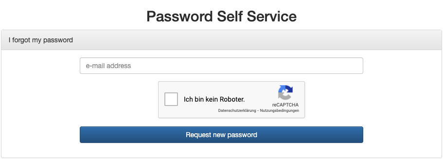

Development in the FirstSpirit Cloud
1. Get Started
Welcome to FirstSpirit Cloud - our Software as a Service (SaaS) environment. This document will guide you through the first steps, which are necessary to use FirstSpirit.
1.1. Sign up/User management
New accounts are created and managed by our Technical Support Team. To get access please create a ticket via Jira Service Desk or send an email to help@e-spirit.com.
|
For more information please have a look at Help @ e-Spirit. |
1.2. Sign in
After your account is created, you will get an email to activate your account first.
How to activate your account:
-
Please open the URL https://accounts.e-spirit.cloud/
Figure 1. Password Self Service -
Please enter your email address, which represents your FirstSpirit user name (e.g myEmailAdress@e-spirit.com)
-
Afterwards you will receive an email to set your password
Please check your spam folder, just in case the confirmation email got delivered there instead of your inbox. -
Please set your password and make sure that no German Umlaut is used
After changing the password no further email will be sent!
1.3. Help @ e-Spirit
If you have any technical issues, please contact our Technical Support. There are two ways to create a ticket:
- Create a Ticket via eMail
-
Please contact our Technical Support via email to help@e-spirit.com.
- Create a Ticket via Jira Service Desk/Sign up
-
Alternatively you can sign up to the Jira Service Desk where you can also create a ticket. Here you can additionally track and check the status of your requests/tickets.
|
For more information please have a look at Our Support Services. |
1.4. Your FirstSpirit Environment
Your FirstSpirit Cloud includes three environments, which are described below.
- Development (DEV)
-
This is the area for Developers.
- Quality Assurance (QA)
-
This environment (also called staging or testing area) is a nearly exact replica of the production environment for testing and to ensure quality before transfer to the Production Environment.
- Production (PROD)
-
This is the area for creating and editing your content. Every content which is deployed/published is saved here.
1.5. New Projects
New projects are created by our Technical Support. If new projects are required, please create a ticket.
Following information are needed:
-
Project name (defined by you; e.g
myProject) -
On which stage the project is needed (DEV/QA/PROD)
-
Which roles/user shall have access to this project
|
For more information please have a look at Roles & Permissions. |
2. Delivery strategy
Currently the content can be published (via push strategy) in the S3 bucket from AWS. Files such as HTML, CSS, JavaScript and media, i.e. everything without server-side-logic, can be stored here. The Content as a Service can be used for the pull strategy and embedded in its own (hybrid approach) applications.
|
For further information please have a look at CDN. |
3. Content Delivery Network (CDN)
|
This service is usage-based. A valid license is required. |
3.1. General
For Content Delivery Network (hereafter referred to as CDN) and website hosting you can use your own domain. For this we need the SSL certificate for the domain. Please send us your certificate via email to help@e-spirit.com.
On the customer side a custom CNAME has to be added with the CDN URL. The URL is usually https://<customer>.e-spirit.cloud.
A separate CDN URL is required for each TLD (TopLevelDomain).
It is important to choose the best project architecture at the very beginning.
In case of international and multilingual sites, the following best practice is recommended: <COUNTRY> / <LANGUAGE> / Content.
In this way, the TLDs can be set up as root for the respective country.
The FirstSpirit Cloud CDN includes further options like:
-
Deployments of FirstSpirit Cloud systems into an S3 Bucket (via module aws-services-s3)
-
Delivery of a S3 deployment for setting up error pages
-
Cache invalidation (also via module aws-services-s3)
extension by forwarding of requests from wildcard (/*) to/index.html -
Securing deployments via Basic Auth
-
Custom redirects (in combination with module aws-services-url redirect)
-
Media Delivery for CaaS Content
3.2. Error pages
Currently the FirstSpirit Cloud CDN supports the following error pages (S3 Bucket) only. Error pages can be configured/entered in FirstSpirit.
-
HTTP 403 /error-pages/403.html -
HTTP 404 /error-pages/404.html
3.3. Redirects
For various reasons it can be useful to set up redirects. However, since these cannot be taken into account via the CDN caching, but are mirrored via the FirstSpirit content, it is necessary to use the module aws-services-url redirect.
The following redirects are currently supported:
-
HTTP 301 Moved Permanently -
HTTP 302 Found (Moved Temporarily)
|
Redirects can be configured/entered in FirstSpirit. |
4. Development
4.1. Custom App Platform
This chapter is intended to enable you to deploy your own application using the FirstSpirit Custom App Platform. The following information is currently required to enable you to initiate the deployment of your own applications.
|
For further information please have a look at Custom App Platform. |
4.2. Template Distribution
The development of templates will take place in FirstSpirit SiteArchitect (Development Stage).
The feature Template Transport allows to transfer all templates (Page Templates, Section Templates, etc.) to all other projects on all other stages. To do this, the user must have an appropriate group assignment in the potential target projects.
This procedure can also be used for manually import of local templates onto the Development server.
4.2.1. Default behaviour
Each transport consists of following objects:
-
Whole template store
-
Technical Media Assets folder of Media Store
uid = technical_media_assets -
All Resolutions
-
DEV Master-Project is connected to the ones on the Stages QA and PROD
|
For individual setup, please contact our Technical Support or have a look at Configuration. |
4.2.2. How to use Template Distribution?
The Developer can start the Template Transport in FirstSpirit SiteArchitect via the button (see figure below) to select one or more target servers. Via the context menu you will get a list of possible target projects.
|
On localhost all projects will be listed; except the current master project. |

The target project needs to have a permission group Template Distribution and the currently logged in user needs to be a member of this group.
The transport will be managed by a FirstSpirit Service.
After the service is started you will receive a server message.
The SiteArchitect will freeze during transport.
Do not worry if your client or your network connection breaks during transport.
Once the transport is initiated it runs independently on the server.
After transport to all targets is finished you’ll receive an email from sender ecs@e-spirit.hosting with subject Template Transport finished.
Which Stage is allowed to deploy to other Stages can be configured via Template Distribution Project App under Target-Server.
The default behaviour ist .

Templates are not treated as Artifacts and they are not under external version control. Therefore, it is not possible to downgrade to earlier versions of the Templates with this mechanism.
4.2.3. Configuration
To use the Toolbar in a project you’ll need to add a project app to the desired master project in the server manager.


- Username & Password
-
The username and password should be predefined in existing projects. If they are not predefined, please contact our Technical Support via email: help@e-spirit.com.
- Target-Server
-
A comma-separated list of target hosts for the Template-Distribution process. localhost is always a possible target, for Template-Distribution to another project on the same server.
The target projects need to have a Permission Group
Template Distributionas an external Group Stringcn=Template Distribution,ou=<customer>,ou=Groups,dc=ecs,dc=e-spirit,dc=de - Export parameters
-
Separated by blank, values separated by ":"
The export parameters that are passed to the fs-cli tool.-
root:templatestore - to transport all templates
-
mediafolder:technical - to transport technical media assets in folder with uid
technical -
content2:<content2uid>:<content2uid> - to transport technical datasets from one or more content2 sources
-
entities:<enitityuid> - to transport entity(ies)
-
projectproperty:RESOLUTIONS - to transport resolutions
-
Example Export Parameters (minimal):
root:templatestore projectproperty:RESOLUTIONS
Here is a full list of possible arguments:
-
fs-cli Export - Exports elements, entities, project properties.
Use one or more of the following identifiers to specify export objects. -
Export elements based on uid with identifiers like
pageref:pageRefUid
Known prefixes for uid-based export
content2 |
gcapage |
media |
page |
pagereffolder |
documentgroup |
pagetemplate |
schema |
sectiontemplate |
workflow |
mediafolder |
styletemplate |
pagefolder |
tableformattemplate |
pageref |
linktemplate |
script |
query |
formattemplate |
tabletemplate |
Export elements based on path path:/<STORE>/<UID>|<NAME>
Export entities with identifiers like entities <CONTENT2_UID>
Export project properties with identifiers like projectproperty:RESOLUTIONS
Known project properties
ALL |
COMMON |
RESOLUTIONS |
GROUPS |
TEMPLATE_SETS |
FONTS |
LANGUAGES |
USERS |
CUSTOM_PROPERTIES |
|
SCHEDULE_ENTRIES |
|
MODULE_CONFIGURATIONS |
Export store root nodes with properties with identifiers like templatestore or root:templatestore`
Known root node identifiers
globalstore |
sitestore |
pagestore |
templatestore |
contentstore |
|
mediastore |
| SYNOPSIS | |
|---|---|
fs-cli |
|
* HTTP |
|
|
|
|
|
|
|
|
|
|
|
|
|
|
|
|
|
|
|
|
|
|
|
export |
|
|
|
|
|
|
|
|
|
|
|
|
|
EXAMPLES |
|
|
|
|
|
|
|
|
|
|
|
|
|
|
|
|
|
|
4.3. Module Development
For module development in your cloud environment an initial setup is required. Please contact our Technical Support.
Please let us know the name of the git-repository.
Each Code repository initially comes with two branches:
-
The development branch is the continuous integration branch connected through the build server to DEV stage.
-
The master branch is the release branch and connected to QA stage. If you need the module on your productive stage, please contact our Technical Support including the following information
Necessary information about the FSM module
-
Module name
-
Group-ID
-
Artifact-ID
-
Artifact-Classifier
-
Version
-
4.4. Setup local Deployment
To resolve FirstSpirit specific dependencies you’ll have to add the e-Spirit Cloud artifactory to your maven settings. Check out the current development branch of your desired module. You’ll find our git stash here https://git.e-spirit.hosting
4.5. Invoke Build Pipeline
4.5.1. Generally
All projects in our git supports the gitflow workflow, which we recommend. Every push you’ll make to the development branch will trigger the build server to try to build and deploy your module to your FirstSpirit DEV stage. The result of the successful build will be stored in your internal snapshot artifactory.
The module needs to have unit tests to make the build successful.
|
Please note that after every deployment an immediate restart of the FirstSpirit server is needed in ordner for all the changes to take effect. |
4.5.2. Mirroring Git repository without a local copy
If you haven’t cloned the repository before, you can mirror it to a new home by
$git clone --mirror git@git.e-spirit.hosting/upstream-repository.git
$ cd upstream-repository.git
$ git push --mirror git@git.e-spirit.hosting/new-location.gitThis will get all the branches and tags that are available in the upstream repository and will replicate those into the new location.
|
Don’t use Also git clone |
4.5.3. Mirroring a git repository if you already have a local working copy
By working copy, we mean a “normal” repository, in which you have the files that are being tracked into git and where you perform commands like git add and so on.
In this case, you may have a lot of local branches and tags that you don’t want to copy to the new location.
But you do have references to remote branches.
You can view them with git branches -r.
If you pay attention to that list, though, you may notice that you have a lot of branches that were already deleted in the upstream repository.
Why?
4.5.4. Cleaning old references to remote branches
By default, when you do a git fetch or git pull, git will not delete the references to branches that were deleted in the upstream repository
(you may view them in your .git/refs/remotes dir).
We need to clean those old references before mirroring them to a new location.
To do so, run git fetch --prune.
This will update your references to the origin repository and also clean the stale branches reported by git branch -r.
4.5.5. Finally mirroring the repository to a new location
Now we’re ready to send those updated references back to the origin repository:
git push --prune
git@git.e-spirit.hosting:/new-location.git
+refs/remotes/origin/*:refs/heads/*
+refs/tags/*:refs/tags/*We want those references inside the .git/refs/remotes/origin to be the LOCAL references in the new location.
The local references there will be stored in the refs/heads dir.
Same thing happens to tags.
The + sign indicates that we want to overwrite any reference there may already exist.
--prune means we want to delete any reference that may exist there if we don’t have such reference in our refs/remotes/origin/* (and tags) references.
4.5.6. Best practises
-
Please do not push to the master branch.
-
Rather do a pull request from development to master branch.
-
Every push to the master branch will build a release which is stored in your internal artifactory.
-
This artifact gets installed on the QA stage.
-
To get the module installed on your FirstSpirit Production stage during next maintenance please file a ticket via help@e-spirit.com including following information
-
Group-ID
-
Artifact-ID
-
Artifact-Classifier
-
Version
-
-
This step is necessary because of our Service Level Agreement.
4.7. Setup your Maven tool to use e-Spirit Cloud Artifactory
-
Please open following URL:
https://git.e-spirit.hosting/projects/CLOUD/repos/public/browse
Only users with the role Git-User can access to this repository. -
Navigate to the
maven-settings/settings.xmlfile in the Bitbucket file browser. -
Copy the content of the file or download it to your local maven directory. A common location for User Home Directory is
.m2/.For more information please have a look at the official documentation at https://maven.apache.org/settings.html.
-
Further you need to replace the following placeholders:
Placeholders<server> <username>CLOUD_USERNAME</username> <password>CLOUD_ENCRYPTED_PASSWORD</password <id>...</id> </server>-
CLOUD_USERNAME: This is your email address which represents your user name in FirstSpirit. -
CLOUD_ENCRYPTED_PASSWORD: To generate your encrypted password, please-
click here
-
login with your FirstSpirit Credentials
-
the generated password will appear
-
-
CUSTOMER: For the repository nodes, replace this value in following URLs with your lowercase customer name: https://artifactory.e-spirit.hosting/artifactory/CUSTOMER-release
-
|
For additional information about maven artifactory please have a look at Maven Introduction. |
5. Guidelines
5.1. Guideline for file readme.md
-
Artifact name/type - Short description of the artifact
-
General information - Purpose and scope of this extension/module
-
Installation und configuration - Which components and configurations are needed?
-
API references - external libraries including versions
-
Authors - Who implemented the module?